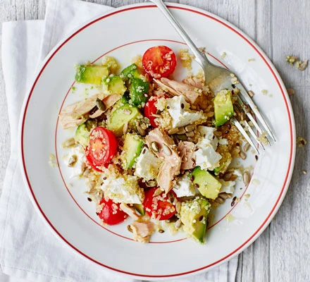

Odin Recipes: Tuna, Avocado and Quinoa Salad
Home

A simple Tuna, Avocado and Quinoa Salad
This is a simple dish, perfect for lunches wtih 28g protein
Ingredients
- 100g Quinoa
- 3 tbsp extra virgin olive oil
- juice 1 lemon
- 1/2 tbsp white wine vinegar
- 120g can tuna: drained
- 1 avocado: cut into chunks
- 50g feta
- 50g baby spinach
- 2 tbsp mixed seeds, toasted
steps
- Rise quinoa.
Add to sauce pan, cover with water and bring to boil.
Reduce heat and simmer 15 mins until grains swollen but still have some bite.
Drain & transfer to slightly cool
-
Combine oil, lemon juice, and vinegar with some seasoning. What seasoning? I don't know, guess until you find something good.
-
Mix everything, seasoning as desired.